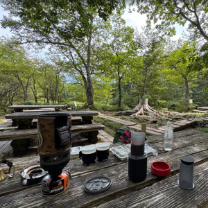
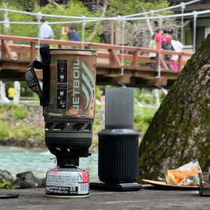
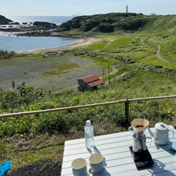
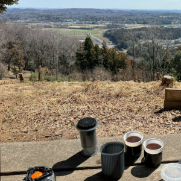

訓練生Aのプロフィール
趣味
一番の趣味で、泊まり、日帰り問わず毎年多くのところに訪れています。
昨年は家庭の事情で何度か九州まで帰省したため、それ以外の旅行は少ないですがそれでも泊りがけで沖縄、大阪（万博）、上高地の３回、
日帰りでは館山、箱根、日光、草津、軽井沢をはじめいろいろと出かけています。（下は昨年旅行に行った先で撮ったもの）
近所を散歩して回るだけでなく、昨年の上高地のようにトレッキングを目的に旅行することもあります。
また出張時の休日に付近を歩き回ったりします。過去ダブリンに行ったときはホテルからダウンタウンまで10km以上を歩いて往復しました（下の写真）
単に味や香り好きなだけでなく、食器や抽出の方法、器具にこだわったり、生豆の処理（ナチュラル、ハニー、アナエロビック等）を気にして豆を選んだりしています。
ショップめぐりも好きでしたが、最近はコーヒーの値段が上がってしまい、少し足が遠のいてしまいました。その代わりに自分で焙煎したり、旅行先、散歩先に器具を持ち出して、景色を楽しみながら好きなコーヒーを淹れるなどして楽しんでいます。




特技
特技は特にありません。ただ、学生時代に競技ダンスをやっていたので、もしかしたら社交ダンスは踊れるかも？